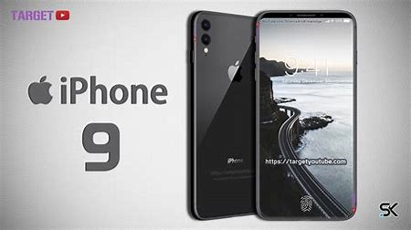
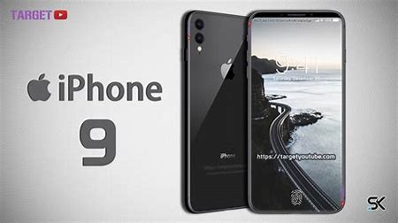

Hi!!! Are you having problem to find the most sutible technology for your self?
Then let me help you!

First let me introduce you to apple's company!!!! : )

First......Iphone 5


They are the first iphone that you can use your fingerprint! The image in iphone 5 has also improved.
Then ...... iphone 6s!!

They can be big or small! You can choose the most suitible size for yourself! They are thinner then iphone 5, and also lighter.
Iphone 6s plus are a little bigger then iphone 6s,so if you like bigger phone buy iphone 6s plus!They are also pretty cheap!(You can use fingerprint as well)
Now its time for .............Iphone 7 to show off !!!!!!

They are 7s plus. They are a little bigger, and the camera is larger.

They are iphone 7s, it is smaller then 7s plus
You also get many different choices in iphone 7! The color,the size,the capacity, and many other things,and it is all your own choice! Iphone 7 are best at taking pictures, it will result in brighter, sharper, more detailed photos, even in low-light conditions! (You can use fingerprint as well)

Then its iphone 8's turn!!!!!!!!!!!!
Iphone 8 is water proof! And also iPhone 8 received an IP rating of IP67, which means it has received the highest level of dust-resistance (6) and the second highest level of water-resistance (7) You can use face recognition on iphone 8! And it is the first phone that can do that this, but you can't use fingerprint on iphone 8 .

It also have big ones and small ones!Iphone 8 is smaller than iphone 7, but it have larger screens
Ok now, Lets relax a bit and see if any of these things fits!
https://youtu.be/o8GrqUSdzi0
Ok, now let's explore more iphones!! : ))
 

Now who is this? Yes ! This is iphone 9 ! :)
You can use fingerprint on iphone 9! It is also water proof.